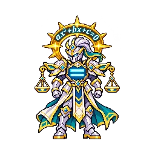
第 1 關
永恆騎士
一元二次方程式的意義
銀白重甲騎士，頭盔後懸著一圈金色日輪。左右肩甲各垂一枚秤錘，胸口刻著藍色等號。把解代回去時，兩枚秤錘同時停在同一高度，胸甲才會亮起。
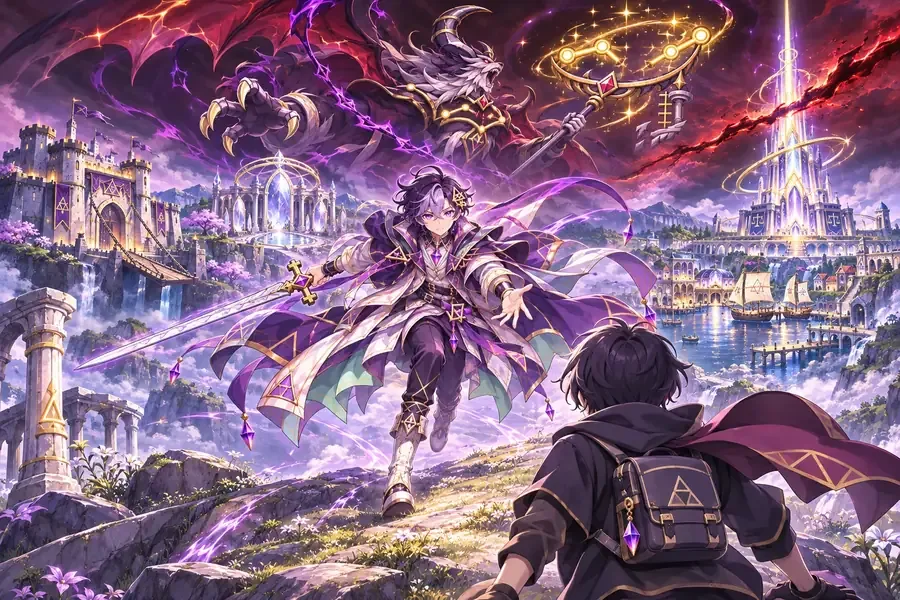
亂算咒解除沒多久，段考魔王斷序惡魔就切斷了星序觀測塔的訊號。要塞的橋突然收起，神殿的鏡子轉了向，港口堆滿送不出去的貨，十三位守護者也陷入沉睡般的混亂，擋住了各處的去路。
身為勇者的你剛踏上石階，魔法劍士星律就握著＋字護手的長劍跑來，淡紫短髮上的三角形髮夾閃了一下。
「只要讓四處的訊號重新接上，守護者就能帶我們找到魔王。走吧，第一站，零刻要塞！」
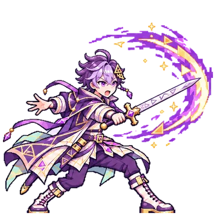
淡紫色短髮、金色三角形髮夾，手握＋字護手長劍的魔法劍士，劍身刻著三角形與 √ 紋。
答題時陪在勇者身邊：答對時一起出劍，答錯時提醒你哪裡算錯。
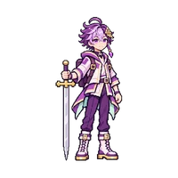
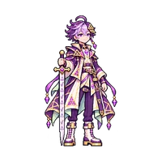
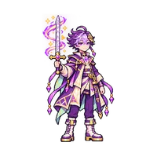
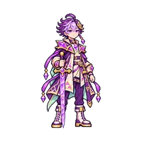
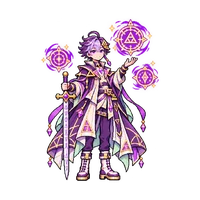
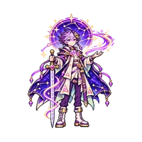
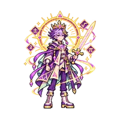
星律會跟著你的努力進化，從見習劍士一路成為傳說數學劍王。
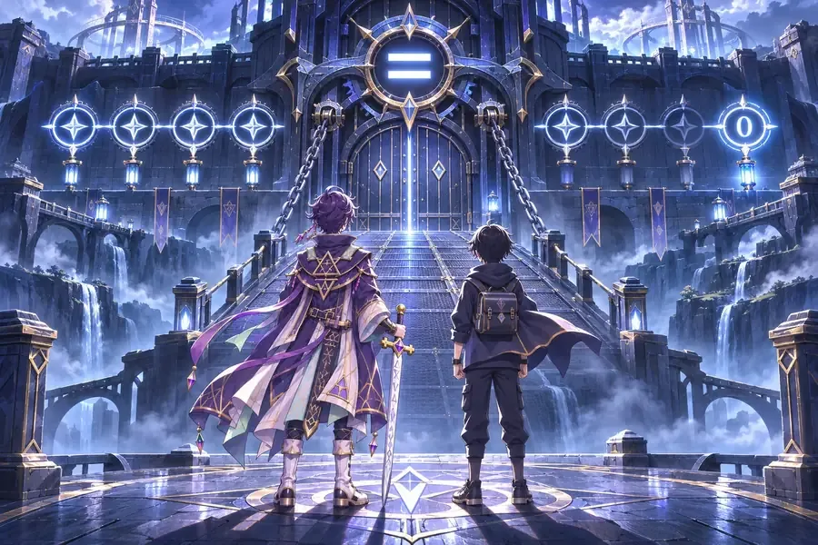
玄鐵吊橋跨過深谷，橋頭的等號閘門兩側各有一排藍白符文，右側歸零時底燈亮起。

一元二次方程式的意義
銀白重甲騎士，頭盔後懸著一圈金色日輪。左右肩甲各垂一枚秤錘，胸口刻著藍色等號。把解代回去時，兩枚秤錘同時停在同一高度，胸甲才會亮起。
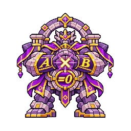
因式分解法解一元二次方程式
身體像一扇厚重的黑石門，兩隻巨臂交扣成鎖，分別刻著 A 和 B。任一隻手臂的符文轉成 0，腹部的圓形鎖芯就會彈開。
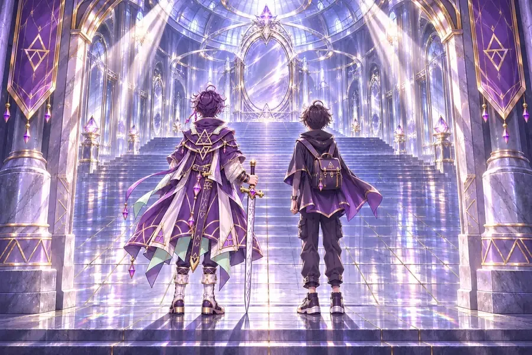
靛藍石階通往銀鏡大廳，地磚拼成方陣，鏡面左右映出對稱的光路。
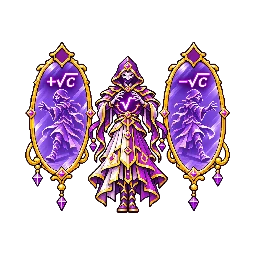
平方根解法
靛藍長袍從中央分成銀白與深紫兩片。肩後各浮一面細長的鏡子，一面刻 ＋，一面刻 －。施法時兩面鏡子各映出一道身影，往相反方向踏出。
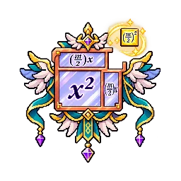
配方法解一元二次方程式
一面浮空的方形銅鏡，鏡面由一塊大正方形和兩片長方形組成，右上角留著一個缺口。一小塊金色鏡片繞在外側，嵌入後鏡框四邊同時亮起，映出完整的正方形。
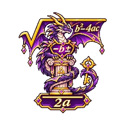
一元二次方程式的公式解
黑曜色龍身配金色長角，雙翼全展時勾出一個巨大的根號，翼膜上浮出 b²−4ac。牠盤繞在神殿石柱上，尾端護著公式之鑰。
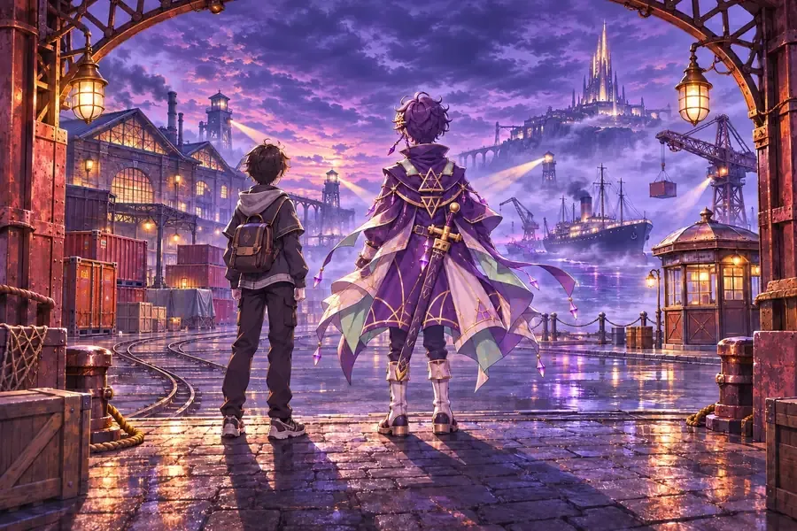
赭紅貨櫃沿碼頭排開，銅軌接起倉庫、堆場與售票亭，探照燈掠過海霧。
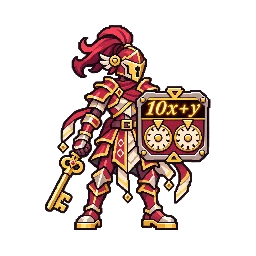
數字問題
深紅輕甲，面罩窄得像鎖孔。方盾上嵌著兩枚可轉動的數字輪，左邊刻「十位」，右邊刻「個位」。每轉一格，盾框就跟著發出一聲清脆的金屬卡響。
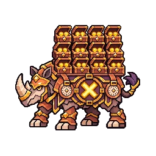
分裝問題
四足巨獸，輪廓像一頭披甲犀牛，背上整排銅匣一路疊到肩部。匣蓋掀開時，每匣都能看見同樣數量的發光貨物。
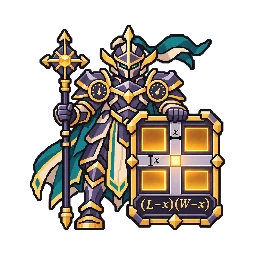
路寬問題
藏青重甲和一面幾乎及地的方盾。盾面像從高處俯瞰的街道，一橫一直兩條銀白路帶交成十字。交會處只亮成一塊方形，兩條路帶等寬。
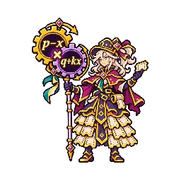
收費問題
酒紅短斗篷，衣襬像一疊可撕下的金邊票券。手杖頂端有兩個咬合的轉輪，一個顯示票價，一個顯示人數。票價輪往下轉，人數輪就往上跳。
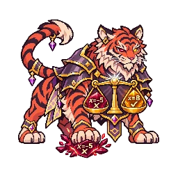
其他應用問題
一頭伏肩弓背的赤銅巨虎，肩脊披著黑鐵疊甲，漆黑虎紋一路收向鞭形長尾。雙眼各映出一枚解晶，左眼是帶金色＋的琥珀晶，右眼是帶暗紅－的煙晶。胸甲上刻著雙盤天秤，兩枚解晶各落一盤，秤心掃過一道銀光。金色解晶扣進胸甲，暗紅解晶滑落，被前爪踩成滿地碎光。
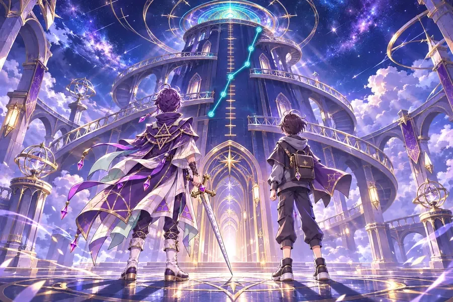
螺旋梯盤上深藍塔身，塔壁刻著時間軸，青色訊號沿折線逐層傳到頂端的觀測盤。
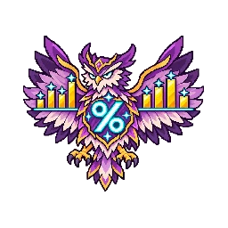
相對次數分配表與折線圖
紫黑羽毛、青白眼睛，胸前兩顆寶石和一道斜紋組成 ％。展翼時，一列星點浮在翼前，每顆星的高度對應該組的相對次數。
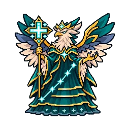
累積次數分配表與折線圖
深青長袍垂到地面，袍尾原本只有一圈微光。每加進一組星星，原有的光帶就往上疊一層，最後整件長袍一層層亮到頂。
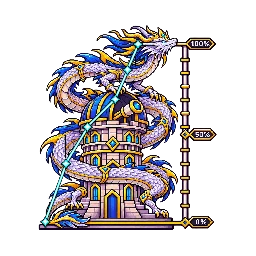
累積相對次數分配表與折線圖
銀藍長龍環繞觀測塔，尾尖貼著塔底的 0％ 刻度。龍身沿折線彎折，每個轉折處都亮著一片星形鱗甲，龍首的金冠正好抵達 100％。
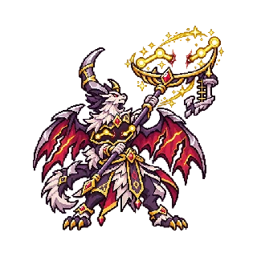
黑銀高角一長一短，暗紅翅膜被一道斜切的裂縫截斷。牠的長杖頂端懸著一段折線，中央缺了一顆光點。揮杖時，塔上的星點會被扯離原本的刻度。
十三關全部通關後才能挑戰。
一回合 10 題。答對一題，怪物扣一格；答錯一題，怪物反擊，勇者扣一格。勇者有 4 格血，血扣光之後再答錯就挑戰失敗，回合立刻結束。
| 答對率 | 結果 | 兌換點數 |
|---|---|---|
| 未滿 60% | 失敗 | 0 |
| 60% 以上 | 勉強通關 ★ | +1 |
| 80% 以上 | 順利通關 ★★ | +3 |
| 全對 | 完美通關 ★★★ | +5 |
同一關可以重複挑戰，拿到更好的評等時補上差額。每次挑戰的題目都會輪換。
失敗沒有點數，也不會解鎖下一關，再挑戰一次就好。
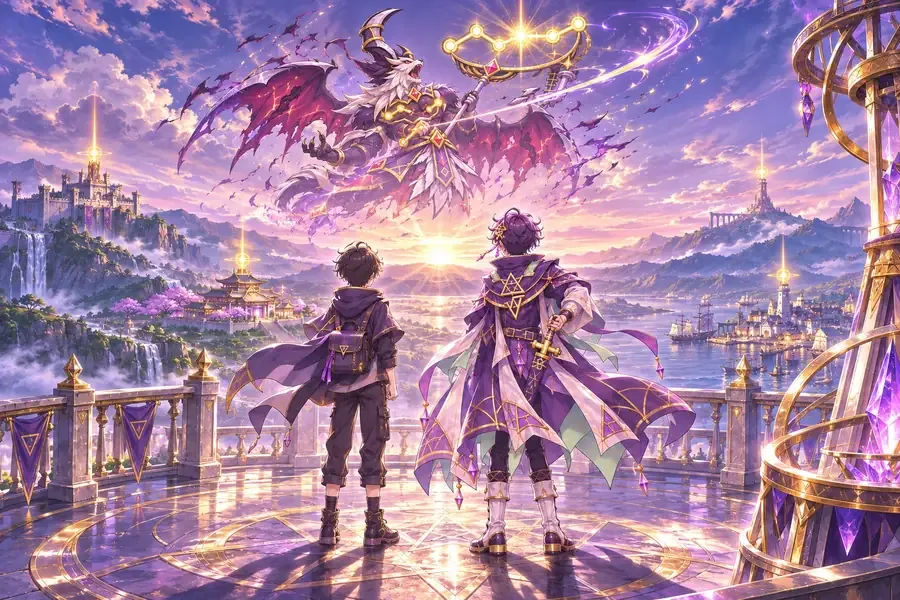
勇者，星序塔等你來重燃！